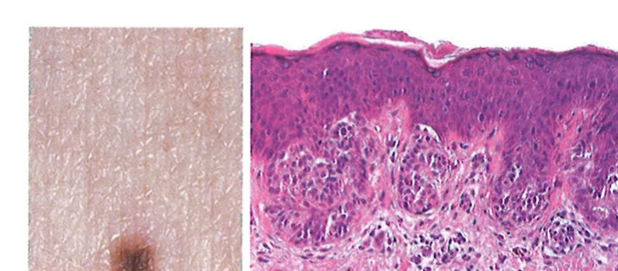
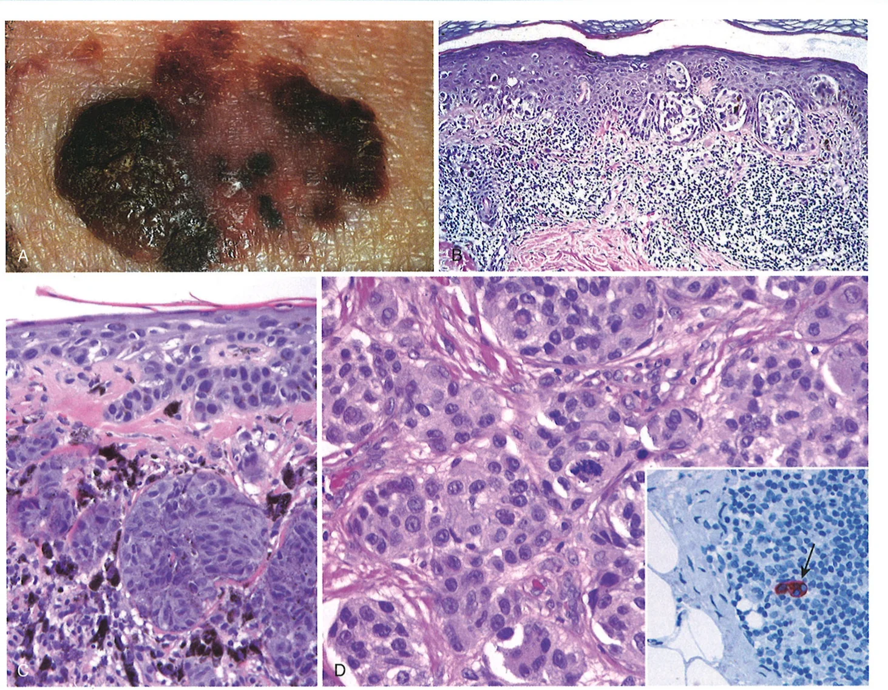
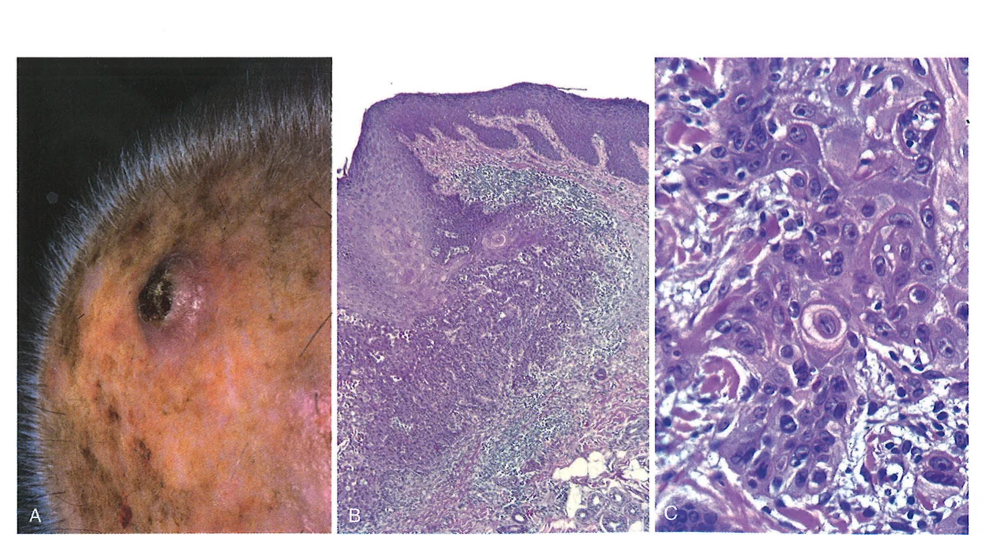
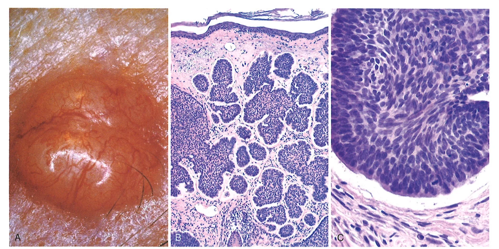
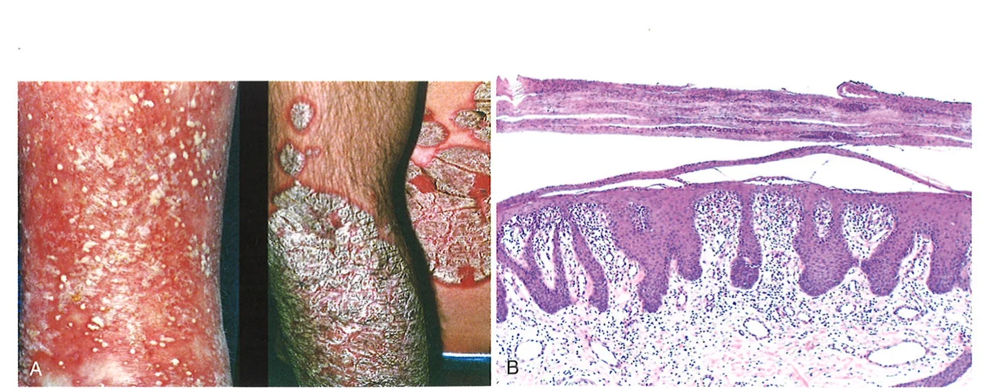
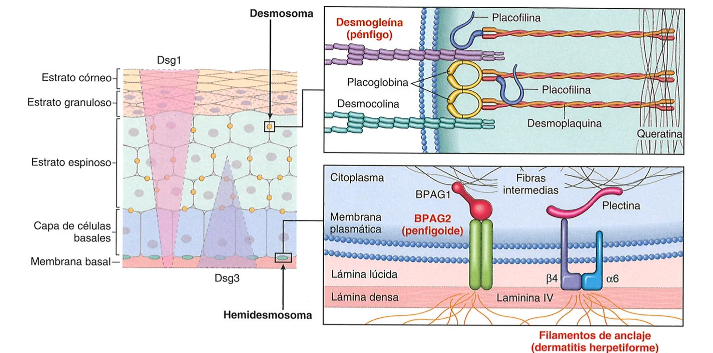
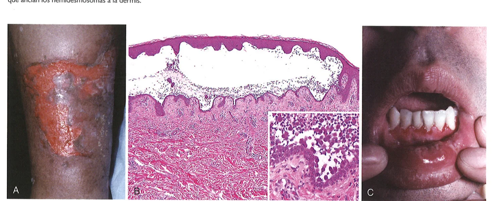
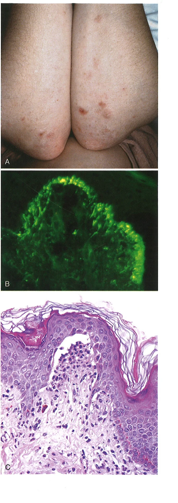

Qué cubre esta guía
Las citas p. N corresponden a la página impresa del libro. El texto se contrastó con el OCR del capítulo.
Lo esencial en 60 segundos
- Las ampollas se clasifican por nivel: pénfigo foliáceo subcórneo (anti-Dsg1), pénfigo vulgar suprabasal (anti-Dsg1 y Dsg3, IgG reticular), penfigoide ampolloso subepidérmico (anti-BPAG2, depósito lineal) y dermatitis herpetiforme con IgA granular papilar p. 1159-1163.
- Melanoma: promotor de TERT mutado cerca del 70%, BRAF 40-50%, RAS 15-20% y CDKN2A en el 40% de las familias; el espesor de Breslow y el ganglio centinela definen el pronóstico p. 1139-1142.
- Crecimiento radial (horizontal, sin metástasis; lentigo maligno, extensión superficial, lentiginoso acro/mucoso) vs crecimiento vertical (nódulo, subclón metastásico) p. 1141.
- CBC: cáncer invasivo más frecuente (~1 millón/año en EE. UU.), vía Hedgehog PTCH-SMO-GLI1, empalizada e hendiduras, casi nunca metastatiza; síndrome de Gorlin por PTCH p. 1147-1148.
- CEC: segundo tumor solar, surge de queratosis actínica con TP53 temprano, VPH 5 y 8 en inmunodeprimidos, menos del 5% de metástasis p. 1145-1147.
- Dermatosis por mecanismo: urticaria tipo I (habones de menos de 24 h), eccema tipo IV (espongiosis), eritema multiforme CD8+ en diana, psoriasis Th1/Th17 (Munro, Auspitz), liquen plano con dermatitis de interfase p. 1153-1159.
Ideas clave
- La piel no es solo una barrera mecánica: es un ecosistema inmunitario con células de Langerhans y dendrocitos que migran a los ganglios regionales para presentar antígeno, y linfocitos T de memoria que reingresan a la dermis mediante el antígeno del linfocito cutáneo (CLA) y receptores de quimiocinas (CCR4, CCR10) p. 1133-1134.
- Los trastornos cutáneos afectan a cerca de un tercio de la población de EE. UU. cada año; el aspecto y la distribución de las lesiones son esenciales para diagnosticar y entender la patogenia, y la nomenclatura macro y microscópica (escama, habón, mácula, pápula, espongiosis, paraqueratosis, dermatitis de interfase) se resume en la tabla 25.1 p. 1135.
- Las dermatosis inflamatorias se dividen en agudas (días a semanas, linfocitos y macrófagos, edema: urticaria, eccema, eritema multiforme) y crónicas (meses a años, cambios de crecimiento epidérmico y fibrosis: psoriasis, dermatitis seborreica, liquen plano) p. 1153, 1157.
- Las enfermedades ampollosas se clasifican por el nivel de separación dentro de la piel: subcórneo (pénfigo foliáceo), suprabasal (pénfigo vulgar) y subepidérmico (penfigoide ampolloso, dermatitis herpetiforme); la evaluación histológica es esencial para el diagnóstico preciso p. 1159.
- El pénfigo vulgar es la variante más frecuente (más del 80% de los casos mundiales) y se debe a autoanticuerpos IgG contra las desmogleinas 1 y 3, con acantólisis suprabasal e inmunofluorescencia en patrón reticular p. 1159-1161.
- El carcinoma basocelular es el cáncer invasivo más frecuente en el ser humano (casi 1 millón de casos al año en EE. UU.); crece lento, casi nunca metastatiza y se asocia a mutaciones que activan la vía Hedgehog (PTCH, SMO, GLI1) p. 1147.
- El carcinoma epidermoide cutáneo es el segundo tumor más frecuente en zonas expuestas al sol, surge de queratosis actínicas con mutaciones tempranas de TP53, y menos del 5% metastatiza p. 1145-1146.
- El melanoma es el más mortal de los cánceres cutáneos; mutaciones frecuentes: promotor de TERT (cerca del 70%), BRAF (40-50%), RAS (15-20%) y CDKN2A; el espesor de Breslow es el principal factor pronóstico p. 1139-1141.
- Los nevos melanocíticos son neoplasias benignas con mutaciones activadoras de RAS o BRAF; los nevos displásicos múltiples son mejor vistos como marcadores de riesgo de melanoma que como lesiones obligadamente premalignas p. 1136, 1138.
- Las infecciones cutáneas ilustran mecanismos específicos: el impétigo ampolloso debe a una toxina bacteriana que escinde la desmogleina 1 (mismo plano que el pénfigo foliáceo, pero por anticuerpo); las verrugas a la acción citopática del VPH con coilocitosis p. 1167-1168.
- La paniculitis puede ser septal (eritema nudoso, sin vasculitis) o lobulillar con vasculitis (eritema indurado); la biopsia debe ser profunda para incluir tejido subcutáneo p. 1166.
- Varios tumores benignos "delatan" síndromes hereditarios: triquilemomas múltiples (Cowden, PTEN), adenomas sebáceos (Muir-Torre, reparación de errores de emparejamiento), cilindromas múltiples (CYLD) y carcinomas basocelulares múltiples juveniles (Gorlin, PTCH) p. 1144, 1147-1148.
La piel: estructura y respuesta inmunitaria
La epidermis madura de abajo hacia arriba: células basales que se transforman en escamosas cornificadas del estrato córneo. En la zona media hay melanocitos dendríticos con melanina y, ocasionalmente, células de Merkel con gránulos neurosecretores y células de Langerhans dendríticas. La dermis contiene vasos pequeños, fibroblastos, mastocitos perivasculares y dendrocitos; los anejos (folículos pilosos, glándulas sudoríparas y sebáceas) descienden hasta la dermis p. 1134.
- Las células de Langerhans y los dendrocitos capturan antígenos en la piel y migran a los ganglios linfáticos regionales, donde presentan sus cargas antigénicas a los linfocitos T y estimulan la respuesta adaptativa p. 1134.
- Los linfocitos T activados expresan CLA y receptores para CCR4 y CCR10, abandonan el ganglio y se alojan en la dermis dirigidos por quimiocinas de queratinocitos activados; sus citocinas median los patrones microscópicos y clínicos de las enfermedades inflamatorias e infecciosas p. 1134.
- La exposición a la luz solar potencia el envejecimiento cutáneo prematuro, amortigua las respuestas inmunitarias a antígenos ambientales y favorece neoplasias cutáneas premalignas y malignas; trastornos sistémicos (diabetes mellitus, amiloidosis, lupus eritematoso) pueden manifestarse en la piel p. 1135.
Nomenclatura dermatológica esencial
| Término | Definición |
|---|---|
| Escama | Excrecencia en forma de lámina seca y córnea, habitualmente por cornificación imperfecta |
| Habón | Lesión elevada, transitoria y pruriginosa con edema dérmico |
| Mácula / placa | Lesión plana circunscrita: mácula 5 mm o menos; placa mayor de 5 mm |
| Pápula / nódulo | Lesión elevada: pápula 5 mm o menos; nódulo mayor de 5 mm |
| Vesícula / ampolla | Lesión elevada llena de líquido: vesícula 5 mm o menos; ampolla mayor de 5 mm |
| Espongiosis | Edema intercelular de la epidermis |
| Acantosis | Hiperplasia epidérmica difusa |
| Paraqueratosis | Queratinización con retención de núcleos en el estrato córneo |
| Disqueratosis | Queratinización anómala y prematura debajo del estrato granuloso |
| Dermatitis de interfase | Infiltrado linfocitario en la unión dermoepidérmica asociado a queratinocitos degenerados y necrosados |
| Ulcera | Pérdida completa de la epidermis que revela dermis o tejido subcutáneo |
Fuente: p. 1135 (tabla 25.1).
Lesiones melanocíticas benignas
Peca (efélide)
- Lesiones pigmentadas más frecuentes de la infancia en piel clara; máculas pequeñas de color marrón que aparecen tras la exposición al sol y se aclaran y oscurecen de forma cíclica con las estaciones p. 1135-1136.
- La hiperpigmentación se debe a mayor cantidad de melanina dentro de los queratinocitos basales; los melanocitos tienen densidad normal y pueden estar levemente aumentados de tamaño p. 1135.
- Las manchas café con leche de la neurofibromatosis de tipo 1 se parecen histológicamente, pero son mayores, aparecen sin luz solar y contienen macrosmelanosomas p. 1135.
Lentigo
- Hiperplasia localizada benigna de melanocitos, de causa desconocida; pequeñas máculas o placas ovales marrón oscuro de 5-10 mm que también pueden afectar mucosas p. 1136.
- Histología esencial: hiperplasia melanocítica lineal sin formación de nidos, limitada a la capa inmediatamente sobre la membrana basal, con capa basocelular hiperpigmentada; a diferencia de los lunares, no se oscurecen con el sol p. 1136.
Nevo melanocítico (lunar)
- Neoplasias benignas frecuentes causadas por mutaciones activadoras adquiridas de RAS o BRAF; los adquiridos son el tipo más frecuente y están presentes en casi todos los sujetos p. 1136.
- Los nevos de la unión son lesiones pequeñas, planas, simétricas y uniformes, con nidos redondeados de células névicas en las puntas de las crestas interpapilares de la unión dermoepidérmica p. 1137.
- El nevo compuesto es elevado con forma de cúpula y combina nidos intraepidérmicos con células que descienden a la dermis; la secuencia madurativa termina en el nevo intradérmico con neurotización p. 1137.


Nevo displásico
- Pueden ser precursores directos del melanoma y, cuando son múltiples, marcan mayor riesgo: en el síndrome del nevo displásico (autosómico dominante), la probabilidad de melanoma supera el 50% a los 60 años p. 1137.
- En las familias con este síndrome hay mutaciones heredadas con pérdida de función en CDKN2A, que codifica p16 (inhibidor de CDK4/CDK6) y p14ARF; los nevos displásicos comparten con los nevos típicos mutaciones activadoras de NRAS y BRAF, pero se suman a una menor capacidad de freno del ciclo celular p. 1138.
- Morfología: componente compuesto central elevado con anillo periférico plano y asimétrico, atipia citológica (núcleos oscuros de forma irregular) y una fibrosis lineal o laminar de la dermis subyacente; el diagnóstico se basa en la constelación de hallazgos, no en uno aislado p. 1139.
- La gran mayoría de los nevos displásicos se mantienen estables y nunca progresan, y no todos los melanomas del síndrome nacen sobre ellos; en formas esporádicas aisladas el riesgo de transformación es muy bajo p. 1138.
| Lesión | Clave histológica | Implicación |
|---|---|---|
| Peca | Melanina aumentada en queratinocitos basales, melanocitos normales | Sin trascendencia, cíclica con el sol |
| Lentigo | Hiperplasia melanocítica lineal, sin nidos | Benigna, no oscurece con el sol |
| Nevo de la unión | Nidos névicos en crestas interpapilares | Benigno, plano |
| Nevo compuesto / intradérmico | Nidos intraepidérmicos y dérmicos con maduración | Benigno, elevado |
| Nevo displásico | Atipia citológica y fibrosis laminar | Marcador de riesgo (o precursor raro) de melanoma |
Fuente: p. 1135-1139.
Melanoma
- Es el más mortal de los cánceres cutáneos, fuertemente ligado a mutaciones adquiridas por radiación UV; en EE. UU. se prevían más de 100.000 casos y más de 6.800 muertes en 2020, con incidencia creciente pero mortalidad en descenso por los inhibidores del punto de control inmunitario p. 1139.
- Además de la piel, surge en mucosas oral y anogenital, esófago, meninges y úvea; la mayoría se cura si se detecta y trata en fases tempranas p. 1139.
Patogenia
- El 10-15% de los casos es hereditario (autosómico dominante con penetrancia variable), por mutaciones en línea germinal en CDKN2A o en genes de la telomerasa; el resto es esporádico y ligado a la UV solar, con mutaciones que llevan la firma UV en el ADN p. 1139.
- CDKN2A está mutado en cerca del 40% de las familias con melanoma familiar; la pérdida de p16 bloquea la inhibición de CDK4/6 (eje RB) y la pérdida de ARF libera a MDM2 para degradar p53; el efecto neto es proliferación melanocítica sin control del ciclo y escape de la senescencia p. 1139-1140.
- BRAF mutado en 40-50% de los melanomas y RAS en 15-20% adicional; los tumores con BRAF mutado pierden a menudo PTEN, que amplifica la vía PI3K/AKT. Los melanomas en piel no expuesta al sol rara vez mutan BRAF o RAS y con más frecuencia activan KIT p. 1140.
- Mutaciones en el promotor de TERT en cerca del 70% de los melanomas esporádicos: es el gen mutado más frecuente en este cáncer y representa el antídoto frente a la senescencia p. 1140.
- Las quemaduras intensas periódicas al principio de la vida son el factor de riesgo más importante; la relación con el sol es menos marcada que en el carcinoma epidermoide, y hay melanomas en piel oscura y zonas no expuestas p. 1139.
Morfología: crecimiento radial y vertical
- Macroscopía: variaciones llamativas de color (negro, marrón, rojo, azul oscuro, gris), a veces zonas hipopigmentadas por regresión, y bordes irregulares mellados, en contraste con los nevos de bordes redondeados y uniformes p. 1140.
- Crecimiento radial: propagación horizontal dentro de la epidermis y dermis superficial, sin capacidad de metastatizar; incluye el lentigo maligno (cara de hombres mayores, puede permanecer décadas en fase radial), la extensión superficial (el tipo más frecuente, en piel expuesta al sol) y el lentiginoso acro/mucoso (sin relación con el sol) p. 1141.
- Crecimiento vertical: tras un período impredecible, un subclón con potencial metastásico invade la dermis profunda en forma de masa expansiva; su aparición se correlaciona con un nódulo clínico y la capacidad de diseminarse p. 1141.
- A diferencia de los nevos, el melanoma carece de maduración o neurotización en la porción profunda; las células son grandes, con núcleos irregulares, cromatina periférica y nucléolos eosinófilos prominentes p. 1141.
- Las lesiones "atípicas" inclasificables se llaman tumores melanocíticos con potencial maligno incierto y exigen extirpación completa y seguimiento estrecho p. 1141.


Pronóstico y clínica
| Factor | Favorable | Desfavorable |
|---|---|---|
| Espesor de Breslow | Escasa profundidad | Mayor profundidad |
| Mitosis | Menos de 1/mm2 | Numerosas |
| Linfocitos que infiltran el tumor | Respuesta importante | Escasa |
| Regresión | Ausente | Presente |
| Ulceración epidérmica | Ausente | Presente |
| Ganglio centinela | Sin afectación | Micrometástasis (peor pronóstico) |
Fuente: p. 1141-1142.
- La mayoría metastatiza primero a los ganglios linfáticos regionales, por lo que la biopsia del ganglio centinela aporta información pronóstica; incluso un número pequeño de células HMB-45 positivas confiere peor pronóstico p. 1141-1142.
- Signos de alarma ABCDE: asimetría, bordes irregulares, color variado, diámetro aumentado y evolución o cambio en el tiempo, especialmente si es rápido; la mayoría de las lesiones supera 10 mm al diagnóstico p. 1142.
- Tratamiento dirigido: los tumores con BRAF mutado responden a inhibidores de BRAF, mientras que los de otros subtipos moleculares no; el melanoma responde de forma destacada a los inhibidores de los puntos de control CTLA4 y PD1, que quitan el freno a la respuesta frente a neoantígenos tumorales p. 1142.
Tumores benignos
Queratosis seborreica
- Tumor epidérmico frecuente de sujetos de mediana edad o mayores; tronco, extremidades, cabeza y cuello; en personas de color, las múltiples y faciales se llaman dermatosis papulosa nigra (hasta el 35% de los adultos afroamericanos) p. 1142.
- Patogenia: mutaciones activadoras de FGFR3 en muchas lesiones esporádicas; la aparición brusca de numerosas queratosis forma parte del signo de Leser-Trélat paraneoplásico, posiblemente por TGF-α de carcinomas del tubo digestivo p. 1142.
- Morfología: placas redondas, planas, en forma de moneda, pigmentación parda uniforme, superficie aterciopelada con orificios porosos con queratina (pista frente al melanoma); histología exofítica y bien delimitada, de células basaloides con quistes córneos llenos de queratina e hiperqueratosis superficial p. 1142-1143.
Acantosis nigricans
- Piel engrosada e hiperpigmentada en las flexuras; en al menos el 80% de los casos se asocia a trastornos benignos (rasgo autosómico dominante, obesidad, anomalías endocrinas, sobre todo diabetes), con debut en la infancia o pubertad p. 1143.
- En el resto se asocia a cánceres, sobre todo adenocarcinomas digestivos, como fenómeno paraneoplásico; patogénicamente hay aumento de señales por receptores tirosina cinasa (FGFR3 en la forma familiar, IGFR1 en la hiperinsulinemia, EGFR por TGF-β en la paraneoplásica) p. 1143.
- Histología común: epidermis y papilas dérmicas onduladas en picos y valles, con hiperqueratosis e hiperpigmentación basocelular leve sin hiperplasia melanocítica p. 1143.
Pólipo fibroepitelial y quiste de inclusión
- El pólipo fibroepitelial (acrocordón) es un tumor blando de color carne con tallo delgado, centrado en un eje fibrovascular revestido de epitelio escamoso benigno; puede sufrir necrosis isquémica por torsión y a veces se asocia a diabetes, obesidad y poliposis intestinal p. 1143.
- El quiste de inclusión epitelial o folicular (quiste sebáceo) proviene de la invaginación quística de la epidermis o de un folículo; la rotura extravasa queratina a la dermis y provoca una respuesta granulomatosa extensa y dolorosa p. 1143.
Tumores de los anejos
- El cilindroma (frente y cuero cabelludo) coalesce formando el "tumor en turbante"; las formas familiares múltiples se deben a mutaciones inactivadoras de CYLD, desubicuitinadora que inhibe NF-κB; histológicamente sus islotes basaloides se acoplan como piezas de rompecabezas p. 1144.
- El tricoepitelioma forma yemas basaloides que recuerdan folículos pilosos primitivos; el siringoma son pápulas pequeñas en párpados inferiores con diferenciación ecrina; el poroma ecrino se ubica en palmas y plantas p. 1144.
- El adenoma sebáceo (sebocitos con citoplasma espumoso) alerta del síndrome de Muir-Torre y del síndrome de Lynch (defectos de reparación de errores de emparejamiento); los triquilemomas múltiples señalan el síndrome de Cowden por PTEN (cáncer endometrial y de mama) p. 1144.
- El pilomatrixoma muestra diferenciación pilosa con "células fantasma" anucleadas y se asocia a mutaciones activadoras de CTNNB1 (β-catenina), clave en el desarrollo del pelo p. 1144-1145.
- Variantes malignas: el carcinoma sebáceo nace en las glándulas de Meibomio del párpado y metastatiza; los carcinomas ecrinos y apocrinos pueden confundirse con adenocarcinoma metastásico por formar glándulas p. 1145.
Fibrohistiocitoma benigno (dermatofibroma)
- Pápula firme y parda, habitual en las piernas; proliferación dérmica circunscrita de células fusiformes benignas con fibroblastos que rodean haces de colágeno individuales p. 1150.
- La epidermis suprayacente muestra hiperplasia seudoepiteliomatosa característica; existen variantes aneurismáticas con sangre extravasada y hemosiderina p. 1150.
Dermatofibrosarcoma protuberans
- Fibrosarcoma primario bien diferenciado de la piel: crece lento, es muy invasivo localmente y recurre, pero casi nunca metastatiza; el tratamiento es la extirpación local amplia p. 1150.
- Patogenia molecular: translocación COL1A1-PDGFβ que yuxtapone el promotor de COL1A1 con la región codificadora de PDGFβ, generando un asa autocrina; los casos irresecables se tratan con inhibidores de la tirosina cinasa de PDGFβ, que deben mantenerse de por vida p. 1150-1151.
- Morfología: nódulo "protruyente" en el tronco dentro de placa indurada, fibroblastos en patrón estoriforme (remolino) con escasas mitosis, epidermis adelgazada (a diferencia del dermatofibroma) e infiltración de la grasa subcutánea en panal de abeja o "queso suizo" p. 1151.
Queratosis actínica y carcinoma epidermoide
Queratosis actínica
- Aparece en piel dañada por el sol de sujetos de piel poco pigmentada; también la inducen radiación ionizante, hidrocarburos industriales y arsenicales; puede progresar de forma gradual al carcinoma epidermoide, análoga a la secuencia precursora del cuello uterino p. 1145.
- Morfología: lesiones menores de 1 cm, marrones, rojizas o de color piel, rugosas "como papel de lija"; puede formarse un cuerno cutáneo; en los labios se llama queilitis actínica p. 1145.
- Histología: atipia citológica en las capas más profundas de la epidermis (displasia basal), disqueratosis con citoplasma rosado, elastosis dérmica azul grisácea y paraqueratosis; a diferencia del carcinoma basocelular, se conservan los puentes intercelulares p. 1145-1146.
- Pueden remitir o estabilizarse, pero bastantes malignizan, lo que justifica la extirpación local (legrado, congelación, antineoplásicos tópicos); el imiquimod tópico, activador de receptores tipo Toll, erradica hasta el 50% de las lesiones frente a un 5% de regresión espontánea p. 1146.
Carcinoma epidermoide
- Segundo tumor más frecuente de zonas expuestas al sol en personas mayores, superado solo por el carcinoma basocelular; se descubre habitualmente pequeño y extirpable, y menos del 5% metastatiza a ganglios regionales, por lo general los de invasión profunda p. 1146.
- Patogenia: el daño del ADN por UV es la causa principal, con mutaciones tempranas de TP53 en las queratosis actínicas (frecuentes en los dímeros de pirimidina, firma de la UV); se agregan señales aumentadas de RAS y señales reducidas de Notch p. 1146-1147.
- La inmunodepresión crónica (trasplante de órganos) es la segunda asociación frecuente, en parte por transformación de queratinocitos por los subtipos VPH 5 y 8; también contribuyen la epidermodisplasia verruciforme, alquitranes y aceites, úlceras crónicas y osteomielitis supurativa, cicatrices de quemaduras, arsénico, radiación ionizante, tabaco y areca p. 1146.
- En la xerodermia pigmentaria, los defectos de la reparación por escisión de nucleótidos obligan a reparar dímeros de pirimidina por vías propensas al error, lo que acelera la carcinogenia p. 1146-1147.
- Morfología: el carcinoma in situ es una placa roja y descamativa bien definida con atipia de espesor completo; el invasivo es nodular, hiperqueratósico y puede ulcerarse, con lóbulos ordenados y queratinización abundante o, en tumores anaplásicos, solo disqueratosis unicelular que exige inmunotinción para queratinas p. 1147.


Carcinoma basocelular
- Es el cáncer invasivo más frecuente en el ser humano (casi 1 millón de casos al año en EE. UU.); crecimiento lento, casi nunca metastatiza, y solo menos del 0,5% produce desfiguración o metástasis; aparece en piel expuesta al sol de adultos mayores, con mayor incidencia en inmunodepresión y xerodermia pigmentaria p. 1147.
- Patogenia: mutaciones que descontrolan la vía Hedgehog; la proteína PTCH es el receptor de Sonic Hedgehog (SHH) y, en reposo, mantiene reprimida a SMO; la unión de SHH libera SMO, que activa al factor de transcripción GLI1 y a los genes de crecimiento y supervivencia p. 1148.
- El síndrome del carcinoma basocelular nevoideo (Gorlin), autosómico dominante por pérdida de PTCH, causa carcinomas basocelulares múltiples antes de los 20 años, meduloblastoma, fibromas ováricos, queratoquistes odontógenos y anomalías del desarrollo; en las formas esporádicas son frecuentes mutaciones con pérdida de PTCH, cerca de un tercio con transiciones C>T de firma UV p. 1147-1148.
| Rasgo | Carcinoma basocelular | Carcinoma epidermoide |
|---|---|---|
| Frecuencia | Cáncer invasivo más frecuente; ~1 millón/año en EE. UU. | Segundo tumor solar más frecuente en mayores |
| Vía molecular | Hedgehog (PTCH, SMO, GLI1) | UV con mutación temprana de TP53, RAS, Notch; VPH 5 y 8 |
| Metástasis | Muy infrecuentes (menos del 0,5%) | Menos del 5%, en lesiones profundas |
| Clínica | Pápula perlada con telangiectasias, ulcera "rodora" | Placa in situ o nódulo hiperqueratósico ulcerado |
| Histología | Nidos basaloides en empalizada, estroma mucinoso, hendiduras de separación | Lóbulos de células poligonales con queratinización; in situ de espesor completo |
| Precursor | No aplica | Queratosis actínica |
Fuente: p. 1146-1148.
- Morfología: pápulas perladas con telangiectasias subepidérmicas; las lesiones avanzadas se ulceran e invaden hueso y senos faciales ("úlceras rodoras"); la variante superficial multifocal es una placa eritematosa, a veces pigmentada, que puede simular un melanoma temprano p. 1148.
- Histología: nidos de células basaloides basófilas en matriz mucinosa, con la disposición en empalizada periférica y hendiduras de retracción del estroma, artefacto que ayuda a diferenciarlo de tumores de anejos como el tricoepitelioma p. 1148.


Dermatosis inflamatorias
Urticaria
- Habones: placas edematosas pruriginosas por degranulación de mastocitos con hiperpermeabilidad microvascular dérmica; lesiones que aparecen y desaparecen en horas (habitualmente menos de 24 h) y episodios de días a meses, entre los 20 y los 40 años sobre todo p. 1153-1154.
- Formas: dependiente de IgE y del mastocito (hipersensibilidad tipo I: pólenes, alimentos, fármacos, venenos); dependiente del mastocito sin IgE (opiáceos, antibióticos, medios de contraste); e independiente de ambos (AAS por inhibición de la ciclooxigenasa, y edema angioneurótico hereditario por deficiencia del inhibidor de C1) p. 1154.
- Histología: infiltrado perivenular superficial escaso de células mononucleares y algunos neutrófilos, con edema dérmico que separa los haces de colágeno, linfáticos dilatados y epidermis normal p. 1154.
- El angioedema se relaciona estrechamente con la urticaria y se caracteriza por un edema de la porción más profunda de la dermis y de la grasa subcutánea p. 1154.
Dermatitis eccematosa aguda
- Uno de los trastornos más frecuentes de la piel; subtipos: dermatitis de contacto alérgica, atópica, por fármacos, fotosensible e irritante primaria; el tratamiento busca retirar la sustancia causal y usa corticoesteroides tópicos paliativos p. 1154.
- Patogenia: reacción de hipersensibilidad tipo IV; el antígeno de contacto (p. ej., el urusiol de la hiedra) actúa como hapteno sobre proteínas propias, es captado por las células de Langerhans, que migran a los ganglios y presentan a linfocitos T CD4+ vírgenes; la reexposición activa linfocitos T de memoria en unas 24 h, con eritema y prurito de la fase espongiótica aguda p. 1154-1155.
- Morfología: lesiones papulovesiculares rojas con costra; la espongiosis (edema intercelular de la epidermis, sobre todo en el estrato espinoso) separa queratinocitos y forma vesículas intraepidérmicas; la cronicidad añade acantosis e hiperqueratosis descamativa; las lesiones de contacto tienden a la impetiginización con costra amarilla p. 1155-1156.
Eritema multiforme
- Reacción de hipersensibilidad autolimitada frente a infecciones (herpes simple, micoplasmas, histoplasmosis, coccidioidomicosis, tifus, lepra), fármacos (sulfamidas, penicilina, barbitúricos, salicilatos, difenilhidantoina, antipalúdicos), cáncer y enfermedades del colágeno vascular p. 1156.
- Patogenia: lesión del queratinocito mediada por linfocitos T CD8+ citotóxicos alostados en la piel, más abundantes en el centro de la lesión; mecanismo compartido con la enfermedad del injerto contra el huésped aguda, el rechazo de aloinjerto y las erupciones fijas por fármacos p. 1156.
- Morfología: lesiones en diana con ampolla central o necrosis epidérmica rodeada de eritema macular; histología de dermatitis de interfase, con infiltrado perivascular superficial, queratinocitos degenerados y necrosis epidérmica confluente que forma ampollas y erosiones p. 1156-1157.
- El síndrome de Stevens-Johnson es la forma febril con afectación extensa de piel, labios, mucosa oral, conjuntiva, uretra y zonas genitales y perianales; la necrólisis epidérmica tóxica añade necrosis difusa y desprendimiento de superficies epiteliales con cuadro semejante a una quemadura extensa, y la pérdida de la barrera puede causar septicemia mortal p. 1156-1157.
Psoriasis
- Dermatosis inflamatoria crónica de base autoinmunitaria que afecta al 1-2% de las personas en EE. UU.; cerca del 15% de los pacientes tiene artritis psoriásica asociada, que puede deformar como la artritis reumatoide; puede asociarse a miopatía, enteropatía y sida p. 1157.
- Patogenia: factores genéticos (variantes de HLA) y ambientales con antígenos aún desconocidos; linfocitos CD4+ Th1 y Th17 y CD8+ citotóxicos invaden la epidermis y crean una "sopa" de citocinas dominada por IL-12, interferón-γ, TNF e IL-17, que estimulan la proliferación de queratinocitos; la eficacia clínica de los inhibidores del TNF subraya esta vía; el trauma local induce lesiones (fenómeno de Koebner) p. 1157.
- Morfología clínica: placas salmón-rosado bien delimitadas con escamas blanquecinas plateadas poco adherentes en codos, rodillas, cuero cabelludo, zonas lumbosacras y glande; cambios ungueales en el 30% (mancha de aceite, hoyuelos, onicólisis); puede causar eritrodermia generalizada p. 1157.
- Histología: acantosis con alargamiento regular de las crestas interpapilares ("tubos de ensayo en una rejilla"), mitosis suprabasales, estrato granuloso adelgazado o ausente y paraqueratosis extensa; placas suprapapilares delgadas sobre vasos dilatados, responsable del signo de Auspitz (puntos hemorrágicos al levantar la escama); neutrófilos en pústulas espongiformes y microabscesos de Munro en el estrato córneo p. 1157-1158.


Dermatitis seborreica
- Dermatosis crónica más frecuente incluso que la psoriasis (hasta el 5% de la población); afecta regiones de alta densidad de glándulas sebáceas: cuero cabelludo, entrecejo, conducto auditivo externo, zona retroauricular, pliegues nasolabiales y zona preesternal; es inflamación de la epidermis, no de las glándulas sebáceas p. 1158.
- Patogenia incierta: el sebo (estimulado por andrógenos) es necesario pero no suficiente; los pacientes con enfermedad de Parkinson tienen sebo aumentado por déficit de dopamina y alta incidencia, que mejora con levodopa; se ha señalado la colonización por Malassezia sin prueba de causalidad; la forma grave era frecuente en VIH con CD4 bajos p. 1158.
- Morfología: máculas y pápulas sobre base eritematosa amarillenta y grasienta con descamación y costras; la caspa es su expresión en el cuero cabelludo; histología mixta espongiótica y acantósica, con labios foliculares (paraqueratosis con neutrófilos y suero en los orificios foliculares) p. 1158.
Liquen plano
- Pápulas "planas, poligonales, purpúreas y pruriginosas" (las seis p), autolimitado y resuelto de forma espontánea en 1-2 años, con hiperpigmentación postinflamatoria residual; sobre el liquen mucoso crónico puede surgir un carcinoma epidermoide por carcinogenia inflamatoria; presenta fenómeno de Koebner p. 1158.
- Patogenia: posiblemente una respuesta de linfocitos T citotóxicos CD8+ frente a antígenos alterados de las células basales o de la unión dermoepidérmica p. 1158.
- Morfología: estrías de Wickham (líneas blancas por hipergranulosis); histología prototípica de dermatitis de interfase: infiltrado denso y continuo de linfocitos en la unión, queratinocitos basales necróticos (cuerpos coloides o de Civatte), contorno en zigzag "en dientes de sierra" de la interfase y escamatización; lesiones orales reticuladas blancas en el 70% de los casos p. 1158-1159.
Enfermedades vesiculoampollosas
- Las ampollas de estos trastornos se forman en distintos niveles de la piel y la evaluación histológica es esencial: subcórneas (pénfigo foliáceo), suprabasales (pénfigo vulgar) y subepidérmicas (penfigoide ampolloso, dermatitis herpetiforme); son mortales en casos extremos si no se tratan p. 1159.
- Entender los desmosomas (desmogleinas 1 y 3, desmoplaquina, placoglobina y placofilina) y los hemidesmosomas (BPAG1, BPAG2, plectina, integrina α6β4) sobre la membrana basal (lámina lúcida, lámina densa, fibrillas de anclaje) es la clave para ubicar cada ampolla y su autoanticuerpo p. 1160.


Pénfigo
- Trastorno ampolloso por autoanticuerpos que disuelven las uniones intercelulares de la epidermis y el epitelio mucinoso; afecta por igual a hombres y mujeres de 40 a 70 años p. 1159.
- El pénfigo vulgar es responsable de más del 80% de los casos mundiales: afecta mucosas y piel (cuero cabelludo, cara, axilas, ingles, tronco, puntos de presión); puede debutar como úlceras orales que persisten meses antes de la afectación cutánea; las ampollas frágiles se rompen y dejan erosiones con costras p. 1159-1160.
- El pénfigo foliáceo es más benigno, endémico en Brasil (fogo selvagem); ampollas tan superficiales que solo se ven eritema, costras y erosiones; el pénfigo eritematoso es una forma localizada malar; el pénfigo paraneoplásico se asocia sobre todo a linfoma no hodgkiniano p. 1160-1161.
- Patogenia: autoanticuerpos IgG contra las desmogleinas; en inmunofluorescencia directa, patrón reticular en red de pesca de depósitos intercelulares de IgG, a todos los niveles del epitelio en el vulgar y más superficial en el foliáceo; los anticuerpos rompen la adherencia del desmosoma y activan proteasas intercelulares p. 1161.
- Morfología: acantólisis con células redondeadas; en el vulgar la separación es inmediatamente sobre la capa de células basales (ampolla suprabasal), cuya base intacta se compara con "una fila de lápidas"; en el foliáceo la ampolla es subcórnea, dentro del estrato granuloso p. 1161.
- La piedra angular del tratamiento en todas las formas de pénfigo son los fármacos inmunodepresores, que reducen los títulos de anticuerpos patógenos p. 1162.


Penfigoide ampolloso
- Afecta a sujetos mayores; caras internas de los muslos, superficies flexoras de los antebrazos, axilas, ingles e hipogastrio; lesiones orales en el 10-15%, habitualmente después de las cutáneas; pueden existir placas urticariales y prurito intenso p. 1162.
- Morfología: ampollas tensas de líquido claro, de menos de 2 cm (a veces 4-8 cm), que no se rompen fácilmente y curan sin cicatriz, a diferencia de las del pénfigo; histología de ampolla subepidérmica no acantolítica con eosinófilos, linfocitos, neutrófilos ocasionales y vacuolización de la capa de células basales p. 1162.
- Patogenia: autoanticuerpos contra BPAG2, componente de los hemidesmosomas que ancla los queratinocitos basales a la membrana basal; depósito lineal continuo de complemento en la unión dermoepidérmica; los anticuerpos activan el complemento, reclutan neutrófilos y eosinófilos y rompen las uniones a nivel de la lámina lúcida p. 1162-1163.
| Rasgo | Pénfigo vulgar | Penfigoide ampolloso | Dermatitis herpetiforme |
|---|---|---|---|
| Edad típica | 40-70 años | Adultos mayores | Hombres de 3ª-4ª década |
| Ampolla | Suprabasal, frágil, se rompe fácil | Subepidérmica, tensa y estable | Subepidérmica, agrupada y muy pruriginosa |
| Anticuerpo | IgG anti desmogleinas 1 y 3 | IgG anti BPAG2 (hemidesmosoma) | IgA anti reticulina (fibrillas de anclaje) |
| Inmunofluorescencia | Reticular intercelular | Lineal en la unión dermoepidérmica | Granular en las puntas de papilas dérmicas |
| Acantólisis | Sí | No | No |
| Asociación | Paraneoplásico con linfoma | Eosinófilos bajo la capa basal | Enfermedad celiaca; dieta sin gluten |
Fuente: p. 1159-1163.
Dermatitis herpetiforme
- Trastorno infrecuente de urticaria y vesículas agrupadas sumamente pruriginosas; predominantemente hombres de la tercera y cuarta décadas; se asocia a la enfermedad celiaca p. 1163.
- Patogenia: anticuerpos IgA frente al gluten (gliadina) que reaccionan de forma cruzada con la reticulina de las fibrillas de anclaje que fijan la membrana basal a la dermis, produciendo una ampolla subepidérmica; ambas enfermedades responden a la dieta sin gluten p. 1163.
- Morfología: lesiones bilaterales, simétricas y agrupadas en superficies extensoras (codos, rodillas, espalda alta, nalgas); microabscesos de neutrófilos y fibrina en las puntas de las papilas dérmicas e inmunofluorescencia con depósitos granulares de IgA en esas puntas p. 1163.


Trastornos ampollosos no inflamatorios
- Epidermólisis ampollosa: grupo de defectos heredados de proteínas estructurales con ampollas por presión, roce o traumatismo desde el nacimiento; los cambios histológicos son tan sutiles que puede requerirse microscopía electrónica p. 1163.
- Tipo simple (75-85% de los casos, autosómico dominante): mutaciones con actividad negativa dominante en queratina 14 o queratina 5, que rompen la fibra de queratina de la capa basal; tipo de la unión: ampolla a nivel de la lámina lúcida en piel de aspecto normal, por defectos autosómicos recesivos de la laminina o mutaciones en BPAG2; tipo distrófico cicatricial: ampolla bajo la lámina densa con fibrillas de anclaje defectuosas por mutaciones en COL7A1 (colágeno VII) p. 1164.
- Porfiria: trastornos innatos o adquiridos del metabolismo de la porfirina (eritropoyética, aguda intermitente, cutánea tardía, mixta, entre otros); urticaria y vesículas subepidérmicas con cicatrices que se exacerban con la luz solar, y vasos dérmicos con paredes engrosadas por depósitos de proteínas séricas; la patogenia es desconocida p. 1164.
Infecciones
Verrugas
- Lesiones proliferativas escamosas por el VPH; frecuentes en niños y adolescentes, por contacto directo o autoinoculación; autolimitadas, regresan espontáneamente en un plazo de 6 meses a 2 años; se han identificado más de 150 tipos de virus p. 1167.
- Correlación clínica con el subtipo: verrugas anogenitales por VPH 6 y 11; el VPH 16 se asocia al carcinoma epidermoide in situ genital y a la papulosis bowenoide; los subtipos 5 y 8 causan los carcinomas de la epidermodisplasia verruciforme; los VPH de alto riesgo producen E6 que anula p53, mientras que la E6 de los subtipos 5 y 8 no afecta p53 y la de riesgo bajo interfiere las señales de Notch p. 1167.
- Tipos: verruga vulgar (manos, superficies dorsales y periungueales, pápulas de superficie "en empedrado"), verruga plana (cara y dorso de manos), verruga plantar y palmar (1-2 cm, confundible con callo) y condiloma acuminado (masas pardas "en coliflor" en zona genital) p. 1167-1168.
- Histología: hiperplasia epidérmica verrugosa o papilomatosa y coilocitosis (vacuolización citoplásmica de las capas superficiales), con gránulos de queratohialina condensados; la tipificación viral se hace con hibridación in situ o PCR p. 1167-1168.
Molusco contagioso
- Enfermedad vírica autolimitada por un poxvirus de 300 nm, uno de los virus patógenos más grandes; propagación por contacto directo, en niños y adultos jóvenes p. 1168.
- Pápulas umbilicadas firmes, pruriginosas, de 0,2 a 0,4 cm, sobre todo en tronco y zona anogenital; la umbilicación segrega material "como cuajada" cuyo tinte con Giemsa muestra los cuerpos del molusco p. 1168.
- Histología: hiperplasia epidérmica verrugosa en copa y cuerpos del molusco: inclusiones citoplásmicas homogéneas elipsoides de hasta 35 μm, eosinófilas en el estrato granuloso y azul pálidas en el córneo, llenas de viriones p. 1168.
Impétigo
- Infección bacteriana superficial muy contagiosa de niños sanos y adultos enfermos, en cara y manos; antes el contagioso era por estreptococos β-hemolíticos del grupo A y el ampolloso por Staphylococcus aureus, pero hoy ambos suelen deberse a S. aureus p. 1168.
- Patogenia: la bacteria induce una respuesta innata con exudado seroso y costra; la ampolla se forma por una toxina que escinde la desmogleina 1, el mismo plano de ampolla del pénfigo foliáceo, pero por toxina y no por autoanticuerpo; como no hay afectación dérmica, cura sin cicatriz p. 1168.
- Morfología: mácula eritematosa con pústulas que al romperse forman costras de color miel; histología sello de una pústula subcórnea con neutrófilos, proteínas séricas y bacterias teñibles p. 1168-1169.
Infecciones micóticas superficiales
- Limitadas al estrato córneo, por dermatofitos; variantes: tiña de la cabeza (niños, placas con alopecia), tiña de la barba, tiña del cuerpo (placa redonda en expansión con borde descamativo elevado), tiña crural (zona inguinal de hombres obesos en época cálida), tiña del pie o pie de atleta (afecta al 30-40% de la población en algún momento) y onicomicosis; la tiña versicolor por Malassezia furfur da máculas con descamación fina en el tronco superior p. 1169.
- Histología: dermatitis eccematosa leve con neutrófilos intraepidérmicos; las hifas se tiñen de rojo brillante con ácido peryódico de Schiff dentro del estrato córneo, el pelo o las uñas; el cultivo del raspado identifica la especie p. 1169.
Trastornos de los anejos dérmicos y paniculitis
Acné vulgar
- Prácticamente universal hacia la mitad o el final de la adolescencia, más acentuado en hombres; lo inducen o exacerban fármacos (corticoesteroides, testosterona, anticonceptivos, yoduros y bromuros), exposiciones laborales (aceites de corte, hidrocarburos clorados, alquitranes) y condiciones oclusivas p. 1165.
- El acné no inflamatorio forma comedones abiertos (pápula folicular con tapón negro de melanina oxidada, no suciedad) y cerrados (tapón atrapado, fuente de rotura folicular) p. 1165.
- Patogenia multifactorial de cuatro factores: queratinización del infundíbulo con tapón que bloquea el sebo; hipertrofia de las glándulas sebáceas puberal por andrógenos; colonización por Propionibacterium acnés, cuyas lipasas convierten los lípidos del sebo en ácidos grasos proinflamatorios; e inflamación secundaria del folículo; los antibióticos actúan eliminando P. acnés y la isotretinoina (13-cis-retinoico) mejora el acné intenso por su acción antisebácea p. 1165.
- Morfología: pápulas y pústulas eritematosas; las variantes intensas como el acné conglobata forman trayectos fistulosos y cicatrices; la rotura de los abscesos dérmicos desencadena inflamación y fibrosis p. 1165-1166.
Rosácea
- Enfermedad de la mediana edad y posterior, hasta el 3% de la población de EE. UU., más frecuente en mujeres; cuatro estadios: enrojecimiento episódico, eritema persistente con telangiectasias, pápulas y pústulas, y rinofima (engrosamiento permanente de la nariz) p. 1165.
- Patogenia: concentraciones cutáneas altas de la catelicidina, con péptidos cualitativamente distintos por procesamiento alternativo por la calicreína 5; la inyección de estos péptidos en ratones reproduce inflamación y dilatación vascular; la activación de TLR2 aumenta la calicreína 5; se han propuesto desencadenantes microbianos sin demostración p. 1165.
- Histología: infiltrado perifolicular linfocitario inespecífico con edema dérmico y telangiectasias; en el estadio pustuloso hay neutrófilos foliculares, rotura folicular con respuesta granulomatosa y, en el rinofima, hipertrofia de glándulas sebáceas p. 1165.
Paniculitis: eritema nudoso y eritema indurado
- La paniculitis es una inflamación del tejido adiposo subcutáneo, preferentemente de la parte inferior de las piernas, que puede afectar de modo predominante a los tabiques o a los lobulillos p. 1166.
- Eritema nudoso: forma más frecuente, con placas y nódulos eritematosos muy dolorosos a la presión, mejor palpados que vistos; se asocia a infecciones (estreptococos β-hemolíticos, tuberculosis, y con menor frecuencia coccidioidomicosis, histoplasmosis y lepra), fármacos (sulfamidas y anticonceptivos orales), sarcoidosis, enfermedad inflamatoria intestinal y neoplasias malignas, aunque muchas veces no se identifica causa; las lesiones se aplanan en semanas como hematomas y no dejan cicatriz p. 1166.
- Histología del eritema nudoso: paniculitis septal con edema, fibrina y neutrófilos en lesiones tempranas, luego linfocitos, histiocitos y células gigantes con fibrosis septal, sin vasculitis; requiere biopsia profunda con tejido subcutáneo p. 1166.
- Eritema indurado: forma infrecuente de adolescentes y mujeres menopáusicas, considerada una vasculitis primaria de los vasos profundos de los lóbulos grasos, con necrosis e inflamación grasa y nódulo que suele ulcerarse; histología de inflamación granulomatosa lobulillar con necrosis caseosa y vasculitis necrosante de pequeños y medianos vasos; nació como respuesta a la tuberculosis, hoy habitualmente sin enfermedad asociada p. 1166.
- Otras paniculitis: enfermedad de Weber-Christian (paniculitis lobular no vasculítica recidivante con macrófagos espumosos), paniculitis facticia por traumatismo o inyecciones del propio paciente, linfomas de linfocitos T lobulillares simuladores y paniculitis lúpica del lupus eritematoso sistémico p. 1166.
Puntos de examen
- Nivel de la ampolla y su anticuerpo: pénfigo foliáceo subcórneo (anti-Dsg1), pénfigo vulgar suprabasal con "fila de lápidas" (anti-Dsg1 y Dsg3, patrón reticular de IgG), penfigoide ampolloso subepidérmico con ampolla tensa y eosinófilos (anti-BPAG2, depósito lineal), dermatitis herpetiforme subepidérmica con microabscesos papilares (IgA granular anti-reticulina, asociada a celiaca) p. 1159-1163.
- El impétigo ampolloso replica el plano de ampolla del pénfigo foliáceo (escisión de Dsg1), pero por toxina bacteriana y no por autoanticuerpo: diferencial clásico de pústula subcórnea p. 1168.
- Melanoma: ABCDE clínica; fases de crecimiento radial (sin metástasis; lentigo maligno, extensión superficial como tipo más frecuente, lentiginoso acro/mucoso) y vertical (nódulo, potencial metastásico); espesor de Breslow como primer factor pronóstico; mutaciones BRAF 40-50%, RAS 15-20%, promotor de TERT cerca del 70% y CDKN2A en el 40% de las familias; respuesta a inhibidores de BRAF y de los puntos de control CTLA4 y PD1 p. 1139-1142.
- Nevo displásico: síndrome familiar autosómico dominante con más del 50% de riesgo de melanoma a los 60 años y atipia con fibrosis laminar; el nevo esporádico aislado tiene riesgo muy bajo y es mejor marcador que precursor p. 1137-1138.
- CBC vs CEC: el CBC es el cáncer más frecuente (casi 1 millón/año en EE. UU.), Hedgehog con PTCH/SMO/GLI1, pápula perlada telangiectásica, empalizada, hendiduras de retracción y casi nulas metástasis; el CEC nace de queratosis actínica con TP53 temprano, menos del 5% de metástasis, y comparte VPH 5 y 8 con la epidermodisplasia verruciforme p. 1146-1148.
- Síndromes cutáneo-cancerosos de tabla: Gorlin (PTCH, CBC múltiples y meduloblastoma), Cowden (PTEN, triquilemomas), Muir-Torre (MSH2/MLH1, adenoma sebáceo y cáncer de colon), melanoma familiar (CDKN2A), xerodermia pigmentaria (reparación por escisión de nucleótidos) p. 1148.
- Dermatosis inflamatorias por mecanismo: urticaria tipo I con habones de menos de 24 h; eccema tipo IV con espongiosis y células de Langerhanas; eritema multiforme por CD8+ con lesión en diana, dermatitis de interfase y variantes Stevens-Johnson y necrólisis epidérmica tóxica; psoriasis Th1/Th17 con acantosis, paraqueratosis, microabscesos de Munro y signo de Auspitz; liquen plano con dermatitis de interfase en dientes de sierra y estrías de Wickham p. 1153-1159.
- Paniculitis: eritema nudoso septal sin vasculitis y sin cicatriz vs eritema indurado lobulillar con vasculitis necrosante y ulceración; la biopsia debe ser profunda p. 1166.
- Signos paraneoplásicos cutáneos: acantosis nigricans con adenocarcinomas digestivos, signo de Leser-Trélat con queratosis seborreicas brotantes y carcinoma apocrino con patrón infiltrante p. 1142-1143, 1145.
Figuras del capítulo
Toca una miniatura para volver a la figura en su sección.